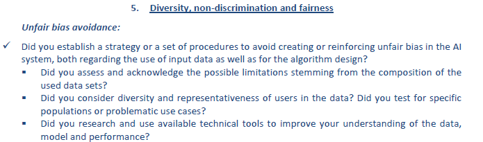
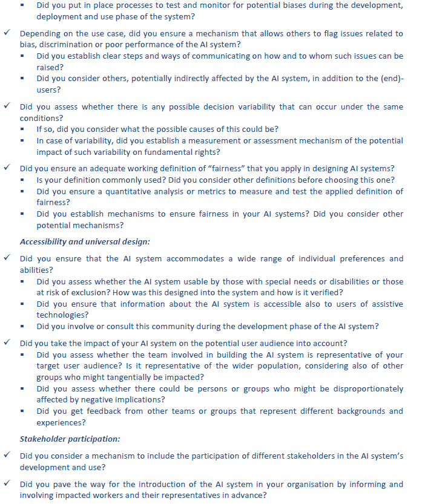

Diversity, non discrimination and fairness¶
AI contributors must foster the creation of bias-free AI systems and give themselves the means to reasonably arbitrage between performance and fairness, through the use of proper frameworks. We will discuss an AI project lifecycle through the eyes of fairness, and explain how one can detect discrimination through statistical methods.
The following table shows guidelines for each phase of an AI project, so as to support AI contributors in the creation of bias-free AI systems.
AI Project lifecycle¶
Project phase |
Guideline |
Practical consequences |
|---|---|---|
Ideation & design |
At the start of the ideation & design phase of an AI project, AI contributors must be aware of potential discrimination risks/breaches in an AI project and avoid initiating a project that discriminates on purpose. Stakeholders should always be involved throughout the whole project and must have complete trust & understanding of the system and its risks. |
|
Data collection & preprocessing |
AI contributors must anticipate bias and question the risk of discrimination in the data collection and preprocessing of data (origin, gender, age, characteristics related to the brand image, …) |
|
AI system training |
While training (programming) AI models, AI contributors must carefully understand the system its mechanisms, analyze results on fairness and correct bias where needed. |
|
AI system industrialisation |
While industrializing AI models, AI contributors must ensure that the AI’s system is fair and non-discriminative. Feedback loops should be put in place when the model is deployed and proper actions should be taken when there is a signal of discrimination. |
The steps in the aforementioned table should be supporting the AI contributor in their project. However, some of these guidelines are subject to human opinion and unfairness might be hard to detect. Therefore, several statistical metrics exist that might help in the identification of discrimination and correction of it. The following table discusses these metrics and shows already existing packages for their implementation.
Identification metrics and ways for correcting discrimination bias and unfairness¶
Topic |
Guideline |
Metrics |
|---|---|---|
Identification |
Quantify the risk of breach of fairness on identified sensitive populations, through the use of metrics |
One might use some of the following metrics for identification of discrimination: |
Correction |
After identification of bias, one might correct the bias through the use of algorithms |
|
Already existing solutions (packages) |
Some open sources packages are created that might help in detection & correction of unfairness in an AI system |
Appendix - Recommendations from the EU¶
Below are the recommendations directly reported from EU.
 {kind=link}
{kind=link}